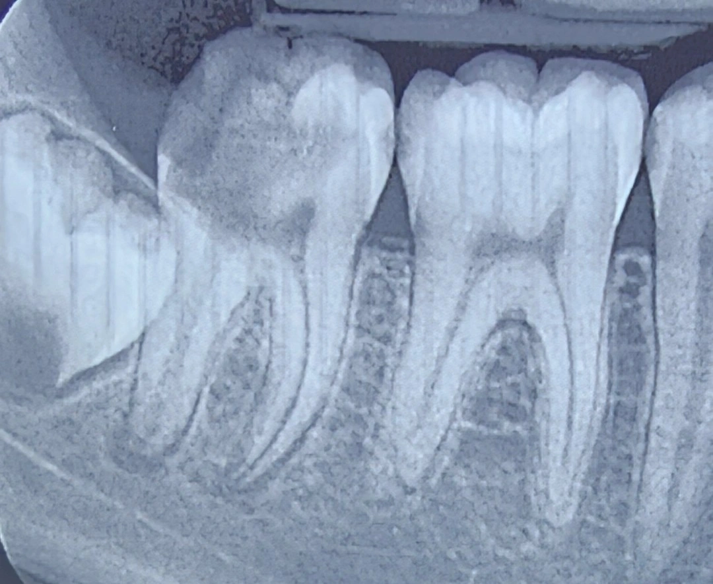

Chairside 30
Do Not Decide a Tooth's Fate on Restorative Criteria Alone

The patient had been referred for a consultation with one specific question: what is the prognosis of tooth #7, and do we keep it or extract it?
Presenting Complaint. A 15-year-old girl, referred to determine the prognosis of tooth #7 and to decide whether to preserve or extract it.
Evaluation. The remaining coronal structure was insufficient for an adequate ferrule, and surgical crown lengthening was not feasible on this tooth either — meaning there was no way to compensate for the missing ferrule. The patient's oral hygiene was also poor. If we put only these findings side by side, the tooth has a poor prognosis and, in an adult patient, would probably be a candidate for extraction.
But there is another variable in this case that outweighs all of them: the patient's age. At 15, growth is not complete and an implant is not on the table. If the tooth is extracted today, several years remain until an implant is permissible, and the ridge atrophies during that interval. In other words, the cost of extraction is not only the loss of the tooth — it is the loss of the bone that was meant to be the bed for the next treatment. As long as the root is in bone, the height and width of the ridge are maintained.
Decision. In the consultation I wrote that, given the patient's age, the tooth should be preserved.
By preserving it, I do not necessarily mean restoring full function. At this stage the goal is to keep the roots in bone, even if ideal restorative conditions are not available. If the only feasible work is root canal treatment and sealing the surface, and only the roots remain, that too does its job. The patient needs to reach an age at which the definitive treatment is feasible for her — with bone that is still in place.
This decision comes with one condition. A retained root preserves bone only as long as it stays free of infection; an infected root destroys exactly the bone we kept it for. Given the patient's poor hygiene, regular follow-up is part of the treatment itself, not an extra recommendation.
️Clinical Tip: prognosis is not a fixed property of a tooth. It depends on what role the tooth is meant to play and over what span of time. In an adolescent patient, extraction removes not only the tooth but the bed for the future treatment. The question is not how restorable this tooth is; it is what has to be preserved until the patient reaches the age of definitive treatment.
The content of this page is intended for the educational use of dentists and dental students.